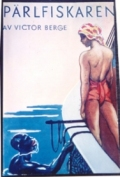
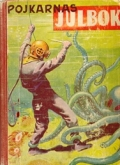
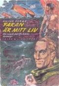

Victor Berge,
Pärlfiskaren
1891-1974
Pärlfiskaren Victor Berge föddes i Bollnäs år 1891 men tillbringade större delen av sin barndom i Ockelbo. Han var son till garvaren Lars Berge och hans hustru Selma Johanna.
Efter ett kort sagt dramatiskt liv avled han i Stockholm år 1974. Victor blev tidigt föräldralös
och sökte sig som femtonåring till sjöss.
Han rymde till Australien och mötte omsider en kinesisk pärlfiskeskeppare, vilket blev inledningen till ett nytt liv för honom. Efter endast några år var han stormrik och kunde då köpa sin första pärlfiskeloggert.
Under andra världskriget beslagtog holländarna hela hans pärlfiskeflotta och sänkte denna för att inte japanerna skulle få någon nytta av den i kriget. Victor Berge arresterades av japanerna som trodde att han var spion och han kastades i Kempe-tais fångläger på Java.
Efter drygt tre år släpptes Victor Berge fri och han återvände till Sverige.
Victor Berge blev känd över hela världen för sin bok PÄRLFISKAREN som först utkom på engelska. En bestseller på 1930-talet som översattes till 18 språk. En förkortad version av boken Pärlfiskaren gick att läsa i Pojkarnas Julbok från år 1942.
Viktors andra bok FARAN ÄR MITT LIV kom ut år 1951 och den översatt också till flera språk.
Vid 83 års ålder avled Victor Berge i Stockholm och blev begraven, enligt sin egen vilja, på Ockelbo kyrkogård år 1974. De efterlämnade ekonomiska
medlen räckte inte till en gravsten.
På initiativ av Birgitta Persson (distriktssköterska i Ockelbo) gjordes år 1976 en insamling till en gravsten där det står Pärlfiskaren Victor Berge 1891-1974.
Finn Rideland
0278-650900



